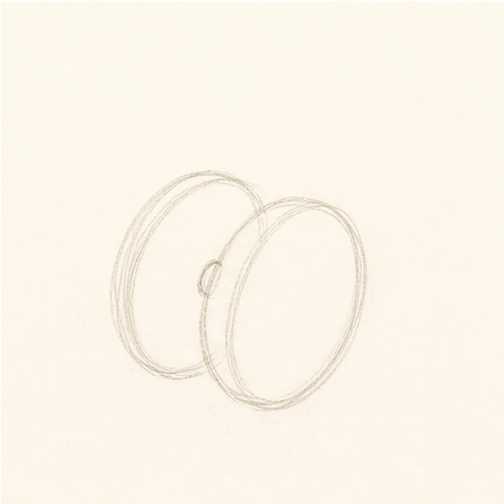
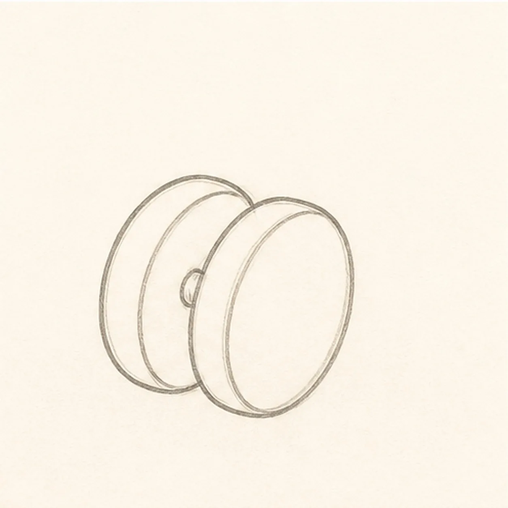
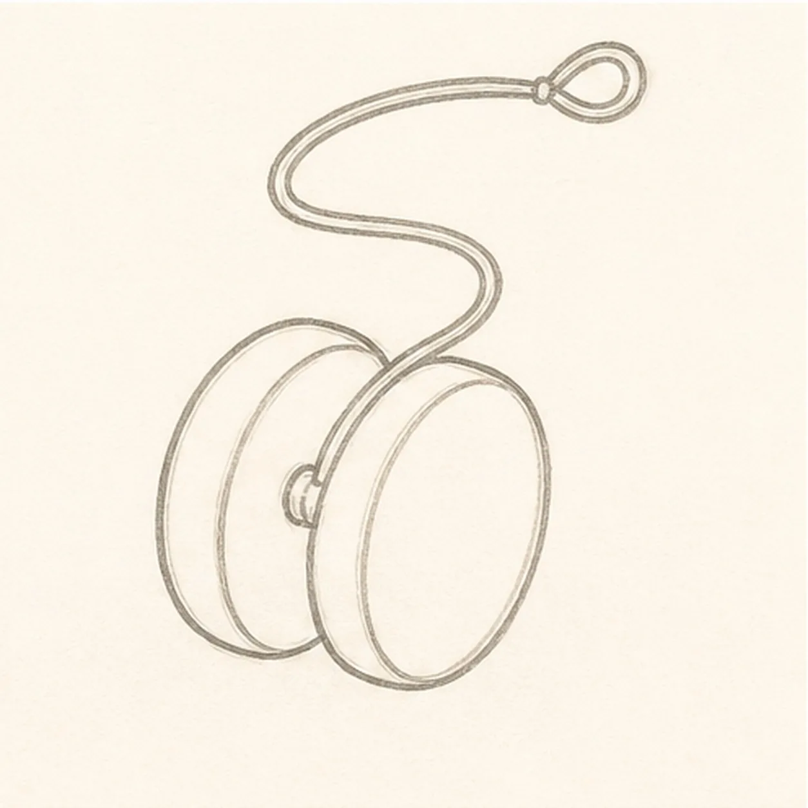
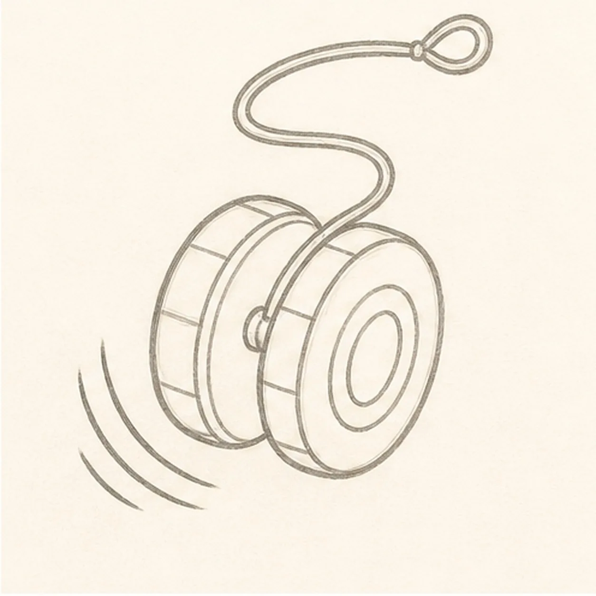
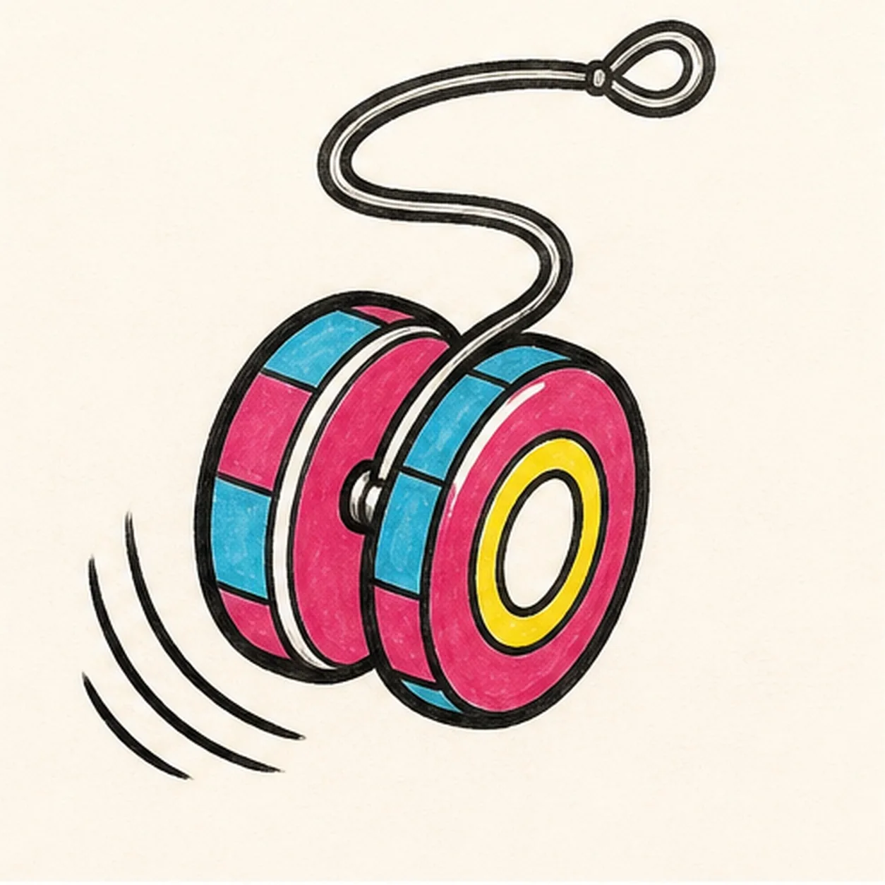

Felt-tip marker mode
Let's draw a cartoon yo-yo in motion
Treat this as one playful practice round: sketch the idea loosely, simplify the shapes, then commit with confident marker outlines and bright fills.
-
01

Block the yo-yo discs
Draw two light offset round disc guides at a slight three-quarter angle and mark one small centered axle gap between them.
Doodle tip: Ghost both round shapes before touching down. Compare the overlap between the discs rather than trying to make either circle mechanically perfect.
-
02

Shape the toy
Build the rounded two-disc silhouette and clear center groove around the guides, keeping the small axle visible.
Doodle tip: Pull each outer arc in one relaxed pass, then rotate the page for the second disc. Keep the center groove narrow enough to read as a gap, not a third disc.
-
03

Loop the string
Run one continuous cord from the established axle into a loose upward S-curve and finish it with a small open finger loop.
Doodle tip: Ghost the full string path before drawing it. Follow the cord from the axle to the loop with your eye once to catch accidental breaks or tangles.
-
04

Add rings and motion
Place inset rings and chunky alternating panels around the existing rims, then add exactly three curved motion arcs beside the lower swing path.
Doodle tip: Space the rim panels by comparing their negative spaces. Let all three motion arcs echo the same curve so they point in one clear direction.
-
05

Ink and color the spin
Trace the established toy, string, rings, panels, and motion arcs in thick black, then fill the rim panels magenta and cyan and the center ring yellow.
Doodle tip: Let the colors dry before reinforcing nearby black edges. Pull the marker around each rim so the visible streaks follow the toy's round form.
-
06
Wind up the finish
Strengthen the existing outlines, string curves, inset rings, three motion arcs, and magenta, cyan, and yellow fills.
Doodle tip: Check that the string still connects cleanly to the axle and the drawing remains face-free. Stop before adding a hand, words, a second toy, or a border.